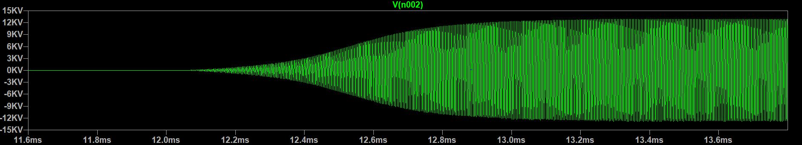
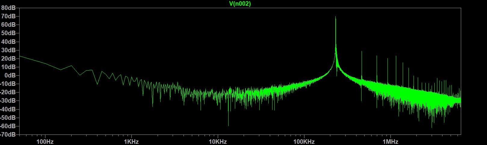

Slayer Exciter Tesla Coils!
Updated 12/23/2024
The "Slayer Exciter" tesla coil is just about the easiest tesla coil design you can make. I've built a few
of these small tesla coils now and love that wireless power transmission and corona
discharge with such a simple circuit!
This is a video of the small coil I built in Northern Ireland. You can see it easily light an LED
from a distance! I'm zooming in while filming so my phone doesn't get too close, the tesla usually
stops the video or randomly touches the screen lol
I'm running this off a super simple "Slayer Exciter" circuit with off
24 volts input. I'm estimating that
it's outputting around 10 kilovolts based on the spark size.
The astable, circular "spinning" on this coil is due to ionic wind pushing a wire around!
This tiny, tiny slayer circuit powers that big coil right now. The name "Slayer Exciter" might come from how many transistors it "slays" haha. In this circuit, I chained three npn transistors in parallel to share power. This was a really bad and dumb thing to do. I try to match the hfe/gain of these transistors manually, making replacements kind of hard, often I just run the coil with one.

I've made a few coils of varying sizes. The largest one creates much better streamers with
the same voltage input as the others. It also makes a good amount of ionic wind!
I wound the smaller coils completely by hand (crazy) and the big
one on an electric drill (so much easier!).
I'm working on making my circuits a lot beefier now, such as a spark gap
driven circuit or mosfet-driven solid state coils!
Click here for some much
beefier tesla coils!

If you connect a tungsten bulb it becomes a really beautiful plasma globe!
This LED bulb has a vibrant blue glow!

Here's a crazy picture
Here's the circuit I'm using to drive these small coils. You can see how incredibly simple this circuit is, driven by a single NPN transistor operating as a switch. I talk more about this dubious circuit below.
Simulations!
I quickly simulated the "Slayer Exciter" in LTSpice using measured values for coil inductance and calculated values for coupling coefficient and secondary parasitic capacitance (C1). The secondary of the coil is literally connected directly to the base of the transistor as a feedback mechanism. This design choice causes the transistor to fail very quickly at any voltage over like 12.
Above is the transient analysis of the startup of the coil in LTSpice. You can see the oscillation resonate until it hits a maximum voltage of 30kVPP. In reality, the voltage reached is about half this, there are more losses in coupling and resonance isn't perfect. In the simulation, a surprisingly pure sine wave is generated!

Above is the Fast Fourier Transform of the output waveform. You can see a very pure sine signal
at ~230kHz. This matches fairly closely with my measured frequency of 310kHz. The simulation is
far from perfect but an alright representation of the real slayer.
Click here for some much
beefier tesla coils!